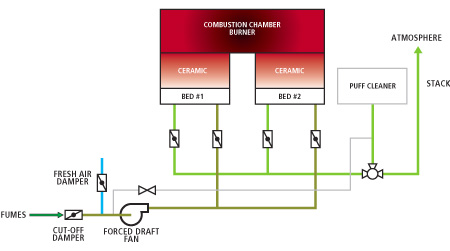
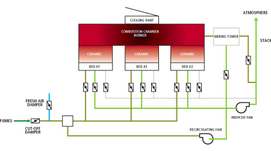

The BIOTOX® regenerative thermal oxidizer (RTO) process consists of oxidizing in a combustion chamber the volatile or condensable organic compounds (VOCs and COCs) contained in the industrial emissions being treated, while recovering sensible heat from combustion gases by means of ceramic beds. The recovered heat is then used to preheat entry gases thanks to an efficient heat transfer between entry and exit gases. The typical combustion temperature is 800†C while the residence time is one second. The combustion gases, mainly composed of water (H2O) and carbon dioxide (CO2 ), are then released into the atmosphere.
VOC treatment
A patented system for recirculating hot gases is installed in order to always to raise the COCs at a sufficient temperature for avoiding condensation in the bottom of the beds.

COC treatment

Visualize the operation of the BIOTOX® with the following Video: